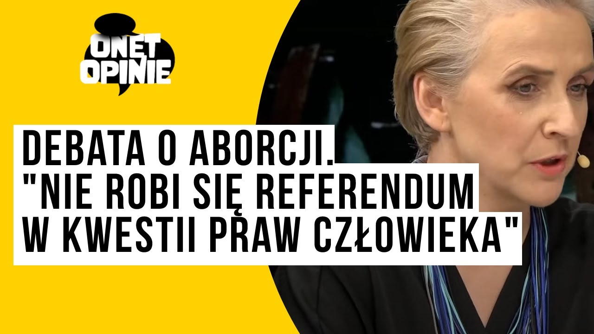

Tkaczyk News
SERWIS INFORMACYJNY
Debata o aborcji
Odpowiadając w sesji pytań, dlaczego boi się debaty sejmowej o aborcji, marszałek Sejmu zaprzeczył, by się jej bał. Powtórzył swoją wcześniejszą argumentację, że otrzymał cztery projekty dot. aborcji na początku lutego br., m.in. po dwumiesięcznym okresie usuwania usterek formalnych projektów złożonych przez Lewicę jeszcze w listopadzie i wobec uzgodnień na konwencie, że wszystkie projekty będą procedowane równolegle. „W ub. tygodniu miałem gotowe do procedowania cztery projekty - i wtedy tak naprawdę była decyzja o tym, kiedy to robimy. (…) Toczę rozmowę ze wszystkimi siłami politycznymi i co mi wychodzi? Że wszystkie projekty byłyby w koszu co do jednego. Dlaczego? Bo Lewica zagłosuje przeciwko projektowi Trzeciej Drogi, a część Trzeciej Drogi zagłosuje przeciwko projektowi Lewicy” - podkreślił. „W ten sposób lewi wystrzelają prawych, prawi lewych, a po drodze zginie projekt Koalicji i zostaniemy z koszem wypełnionym projektami. W związku z tym zaczynam kółko trwające cały ub. tydzień po wszystkich przedstawicielach sił politycznych i mówię: słuchajcie, czy to naprawdę jest dobry pomysł: teraz każdy grzeje swoje, mamy wzmożenie, zróbmy to może po wyborach - to już był nasz wspólny pomysł pod koniec ub. roku, co do którego się wszyscy zgodziliśmy - zróbmy to po wyborach, żebyśmy się nie pozabijali” - obrazował Hołownia. „Kiedy widzę, że wszystkie projekty upadną, mówię: słuchajcie, zróbmy to za 30 dni dlatego, że uzyskałem deklarację ze stron wszystkich uczestników gry, że jest bardzo duża szansa, że wtedy one nie zostaną od razu wyrzucone do kosza w pierwszym czytaniu, że powołamy komisję nadzwyczajną. Jeżeli widzę cień szansy, to się go łapię” - tłumaczył przypominając, że wszystkie projekty aborcyjne w Sejmie po 1996 r. były odrzucane w pierwszym czytaniu. Powtórzył, że większość dla liberalizacji aborcji w Sejmie uzyskać będzie bardzo trudno, choć jego zdaniem jest szansa, żeby projekty doszły do drugiego czytania. „Jesteśmy dzisiaj w sytuacji, w której musimy się zastanowić, co zrobić, żeby to drakońskie prawo, które dzisiaj obowiązuje, jak najszybciej przestało obowiązywać” - ocenił w sobotę Szymon Hołownia. Wszystko to pomimo spokojnych i nieatakujących wypowiedzi zostało mocno skrytykowane przez Lewicę i jej polityków. Anna Maria Żukowska zaczęła nawet obrażać Szymona Hołownie na portalu społecznościowym "X" i tam rozpoczęła się kłótnia nie w pełni cenzuralna. Sejm, a w szczególności Koalicja nie wie jakie ma podjąć dalsze kroki w sprawie tematu aborcji.
27.02.2024, 19:56